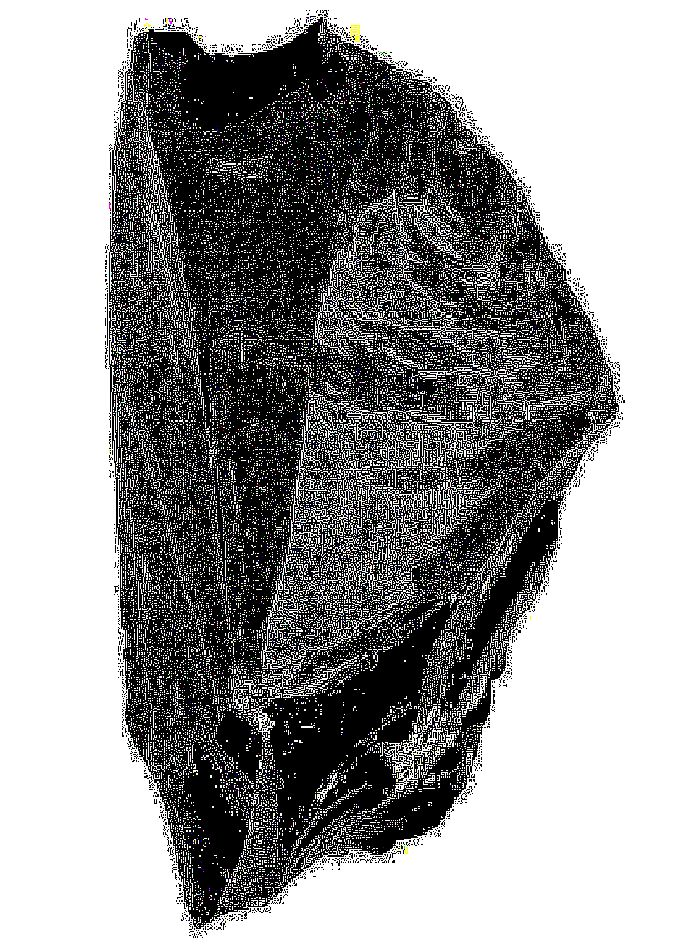
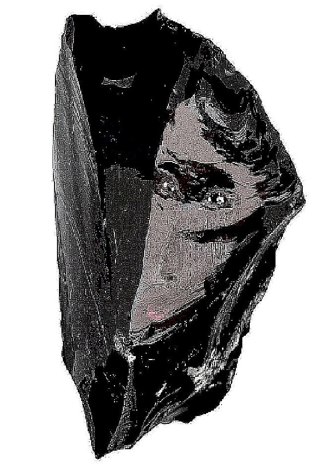
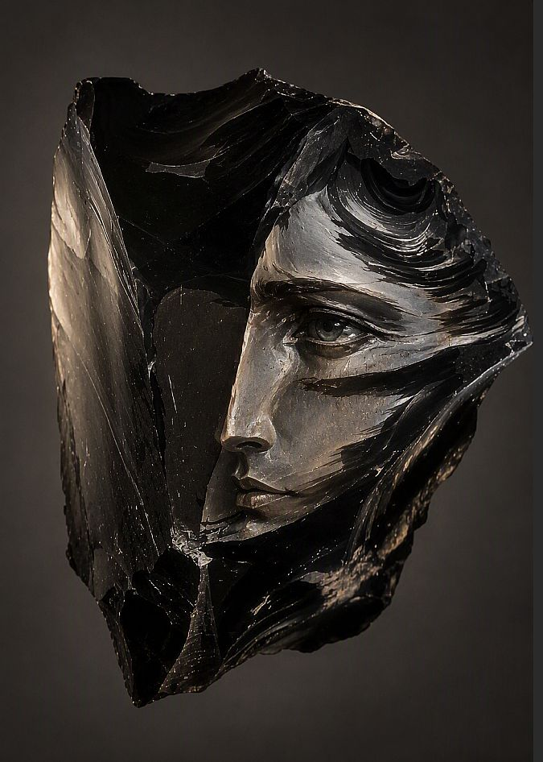

Чёрный обсидиан лежит каменным обломком — гладкий, непроницаемый, холодный. Стеклянная поверхность хранит лишь отблески света, но в глубине черноты ещё ничего не различить. Камень спит, и образ скрыт в его тёмной сердцевине.
Острые сколы обнажают внутреннюю структуру — неровные грани ловят свет под новым углом. В раковистых изломах мерцает намёк на движение, словно тьма начинает дышать. В изгибах сколов проступают неясные очертания — тень ещё без лица, но уже с формой.



Из чёрной глубины камня смотрит женское лицо — высеченное резцом мастера, но словно проступившее само. Полированные плоскости светятся мягким стеклянным блеском, а грубые сколы обрамляют образ, как тёмные крылья. Обсидиан больше не молчит — он хранит взгляд, обращённый к нам из вулканической бездны.
В огненном чреве горы жила Ихуэль — дух вулканического стекла, рождённый из лавы и молнии. Когда вулкан уснул, она вышла на поверхность, но солнечный свет обратил её в камень. Тело стало обсидианом — чёрным и острым, как память об огне. Мастера древности чувствовали её присутствие в каждом осколке и высекали лики, чтобы дать ей голос. Говорят, если долго смотреть в полированный обсидиан, можно увидеть глаза Ихуэль — бездонные и тёмные, как остывшая лава.